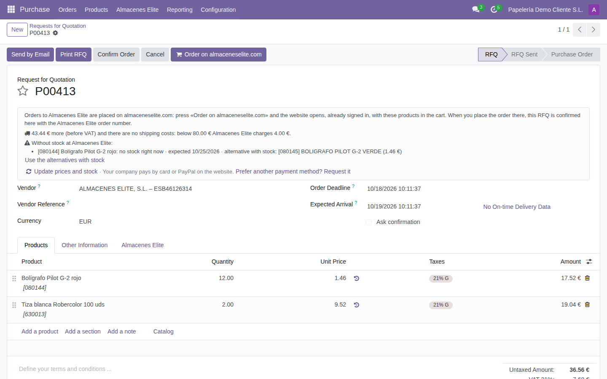
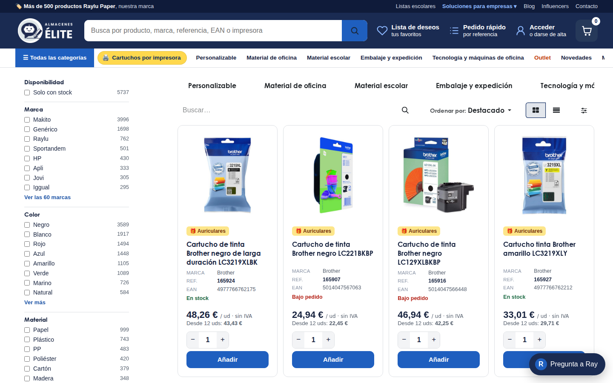
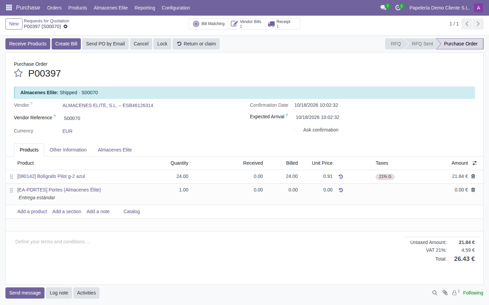
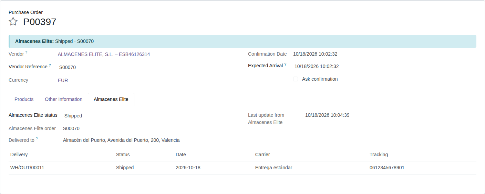
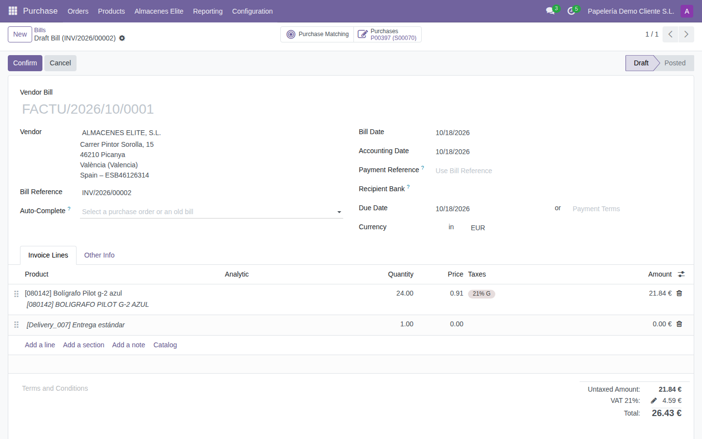
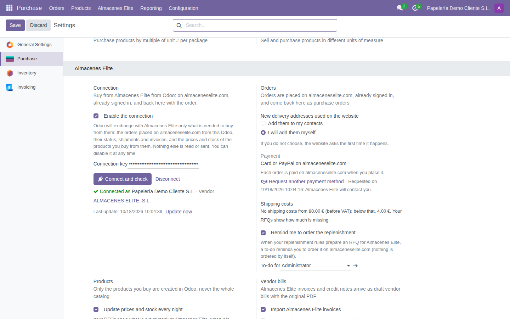

Almacenes Elite is a Spanish wholesaler of office supplies, stationery and school material. With this module, companies that buy from Almacenes Elite keep their purchases in their own Odoo without typing anything twice: the order is placed on almaceneselite.com, with your prices, approvals and payment method, and it comes back to Odoo as a confirmed purchase order. Shipments, tracking numbers and invoices follow by themselves.

Purchase › Almacenes Elite › Shop on almaceneselite.com opens the website already signed in with your company's web account: no password to remember (your connection key signs you in and never reaches the browser). You buy as always, with your prices, your company's approvals in the B2B portal and your usual payment method.

When you place the order, the website takes you back to Odoo and it is there as a confirmed purchase order, with the Almacenes Elite order number as vendor reference and the same total (shipping included). Only the products you buy are created in your Odoo: the catalog is never imported. If the tab is closed before coming back, the order arrives with the next update.

An RFQ of your Odoo (for instance, the one your reordering rules prepare) opens on almaceneselite.com with its products in the cart, and the order placed there confirms that same RFQ. Before that, the RFQ tells you what is out of stock at Almacenes Elite, when it is expected, an alternative with stock (replaced with one click) and how much is missing to avoid shipping costs. Prices and stock are updated every night, and a to-do reminds you when your replenishment is ready to order.
Every hour (or with "Update now") the order status, deliveries, carrier and tracking links come back to the purchase order. With Inventory installed, the tracking number is also written on the receipt. "Return or claim" opens the returns page of almaceneselite.com with that order already chosen.

Almacenes Elite invoices and credit notes are created as draft vendor bills, linked to your purchase order lines, with the original PDF attached and never twice. You can also import the invoices of purchases made on the website or by phone, and post the bills automatically when the totals match.


This module uses an external service: Almacenes Elite. Nothing is sent until you enable the connection in the settings. Then it only exchanges what is needed to buy from them: the orders placed on almaceneselite.com from this Odoo, their status, shipments and invoices, the prices and stock of the products you buy from them, the products of the RFQs you open on the website and, when you shop on the website from Odoo, the address of your Odoo so the website can send you back. When you create your account from Odoo, the company data you see in the form is sent. The key is stored in your database, visible only to administrators, and can be revoked at any time by Almacenes Elite. Your other Odoo data is never read.
Questions: pedidos@almaceneselite.com